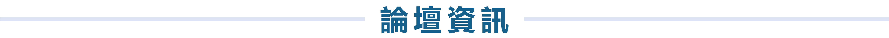

醫療人因論壇
| 主題：智慧醫療, 人工智慧與人因工程的發展與趨勢 | |
|---|---|
| 主持人 | 蘇國瑋：國立高雄科技大學 資訊管理系 教授兼系主任 |
| 引言人 | 梁曉帆：國立台北科技大學 工業工程管理系 副教授 |
| 與談人 |
林承哲：國立台灣科技大學 工業管理系 副教授 黃育信：國立屏東科技大學 工業管理系 助理教授 林宏榮：奇美醫院 首席醫療副院長 楊宗龍：高雄榮民總研創中心 創新長 |
職安衛人因論壇
| 主題：疫情中的重複性肌肉骨骼傷害防制現況與未來展望 | |
|---|---|
| 主持人 |
陳志勇：勞動部勞動及職業安全衛生研究所 職業危害評估研究組 組長 劉立文：勞動部勞動及職業安全衛生研究所 職業衛生研究組 組長 |
| 與談人 |
陳協慶：國立台北科技大學 工業工程與管理系 教授 李正隆：朝陽科技大學 工業工程與管理系 副教授 林志隆：國立臺灣藝術大學 工藝設計學系 副教授 杜信宏：僑光科技大學 電腦輔助工業設計系 副教授 |
國防人因論壇
| 國防人因論壇(1) |
| 主題：人體計測與裝備發展設計 | |
|---|---|
| 主持人 | 施武樵：國防部海軍司令部 後勤處 少將 |
| 與談人 |
劉立文：勞動部勞動及職業安全衛生研究所 職業衛生研究組 組長 歐仲偉：國防工業發展基金會 秘書兼召集人 馮文陽：國家中山科學研究院 系發中心人因組 沈培德：財團法人紡織產業綜合研究所 組長 溫志皓：世新大學 傳播管理系 助理教授 石裕川：國防大學 運籌管理系 教授 |
| 國防人因論壇(2) |
| 主題：從軍備看人因 | |
|---|---|
| 主持人 | 歐陽力行：國家中山科學研究院 副院長 |
| 與談人 |
張堅琦：國立清華大學 工業工程與工程管理系 教授 陳協慶：國立台北科技大學 工業工程與工程管理系 教授 詹翔閔：緯創醫學科技的技術經理 任國光：國家中山科學研究院 飛彈研究所 副所長 齊立平：國家中山科學研究院 航空研究所 所長 |
設計人因論壇
| 主題：策展的體驗傳遞與後疫情的挑戰 | |
|---|---|
| 演講人 |
張漢寧： 中華民國工業設計協會 理事長 桔禾創意整合 UID Create 創意總監 |
| 主持人 |
陳俊智： 國立高雄師範大學 工業設計學系暨研究所 教授 臺灣設計跨界交流協會 理事長 |
| 與談人 |
馬敏元：國立成功大學 工業設計學系 教授 杜文傑：唐草設計/NDD Design 總經理 周驊：捷安特股份有限公司/女性自行車 產品經理 |